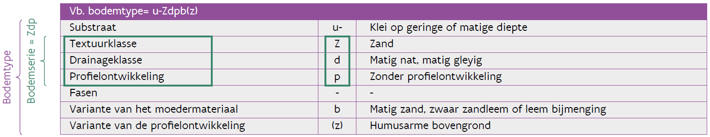
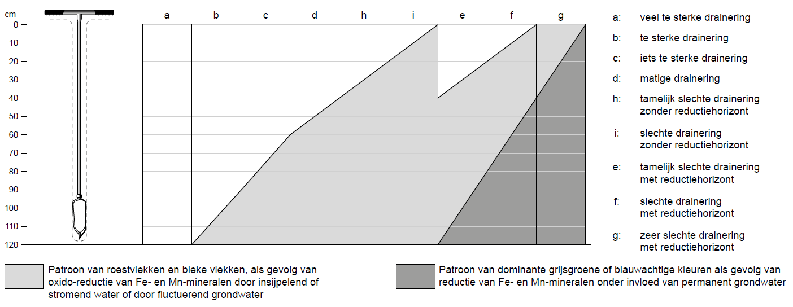
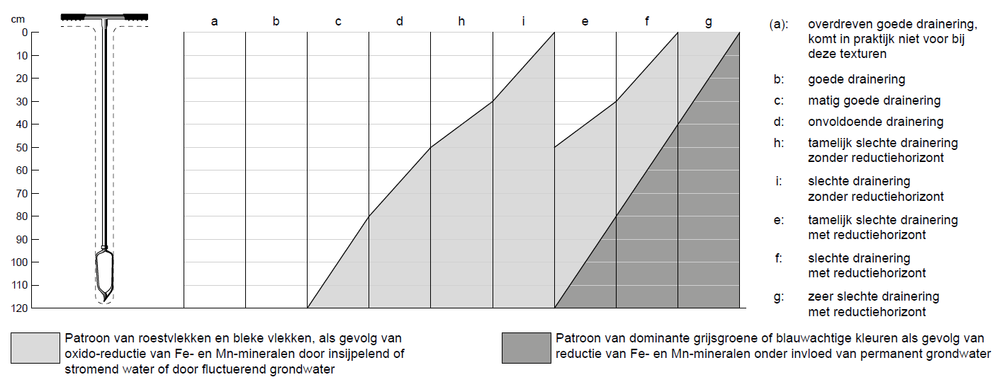
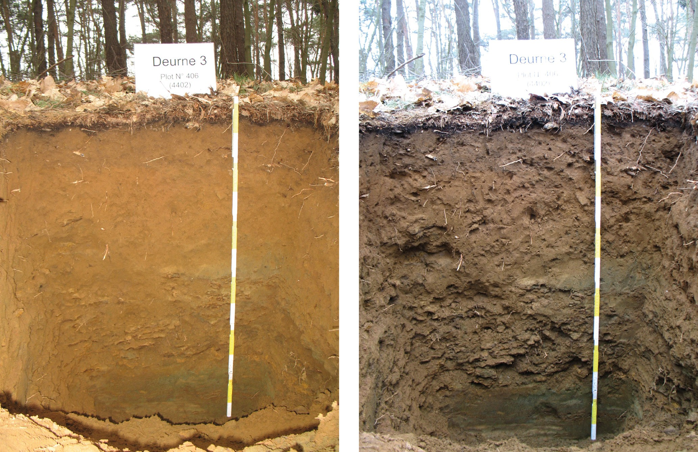
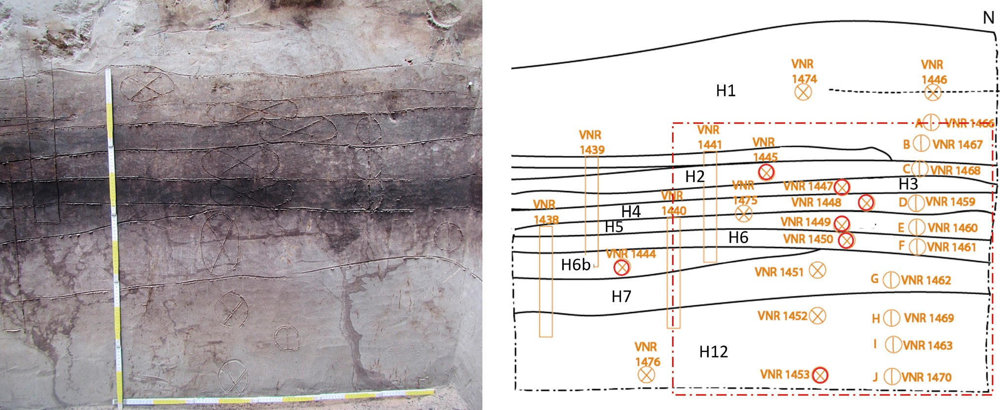
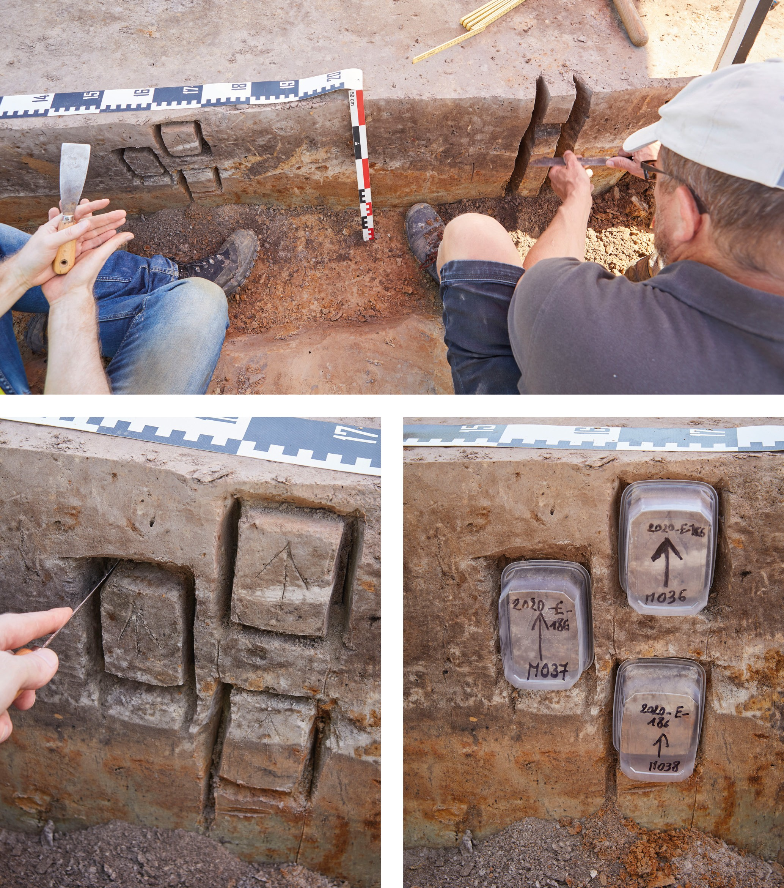
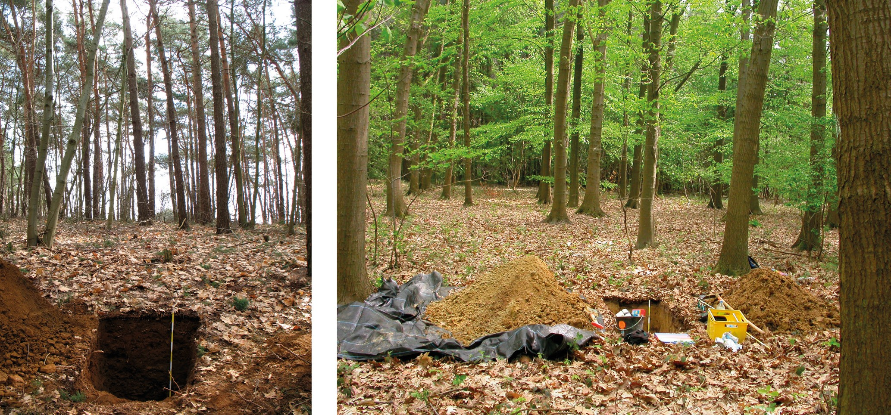
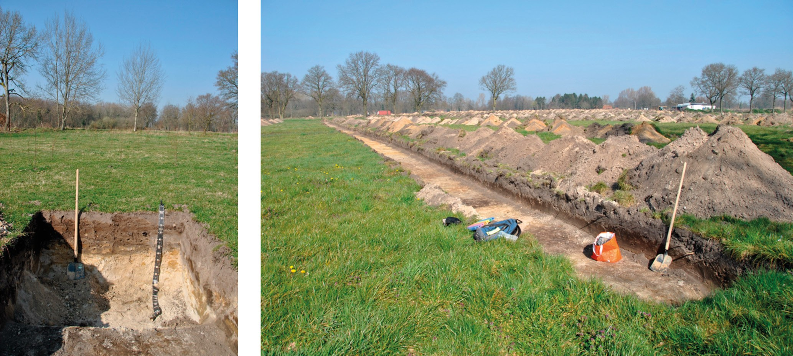
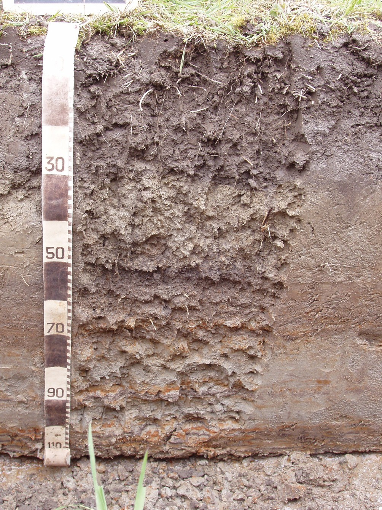
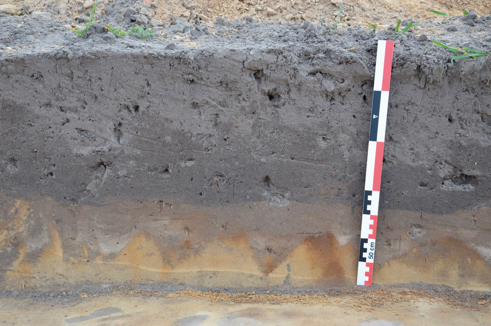

5.1 Bodemtypes volgens de Belgische bodemclassificatie
Bij bodemprospectie op archeologische sites wordt de bodemserie volgens de Belgische bodemclassificatie (bv. wAba0) aan de hand van eigen veldobservaties en interpretaties bepaald. Achteraf kan dit vergeleken worden met de gegevens van de Belgische Bodemkaart (ontsloten als ‘Digitale bodemkaart van het Vlaams Gewest’). Hierbij wordt het morfogenetische classificatiesysteem toegepast, ook voor de polders (in analogie met de Scheldepolders).
De bodemserie vormt de kern van het bodemtype. Ze is opgebouwd uit drie symbolen: de textuurklasse (zie 3.8) van de bovenste 20 cm (in praktijk eerder 30-35 cm gelijk aan de ploeglaag), de drainageklasse en de profielontwikkeling.
Het bodemtype bestaat uit de bodemserie aangevuld met een mogelijk substraat, fase, variante van het moedermateriaal en/of variante van de profielontwikkeling. De volledige legende is beschreven in Van Ranst & Sys (2000) of in de Verklarende tekst van de bodemkaart, te consulteren op de website DOV (https://www.dov.vlaanderen.be/). In het algemeen is op de bodemkaart steeds het bodemtype aangegeven bv. wAba0; wanneer er bv Aba staat naast Aba1, staat Aba impliciet voor Aba0, en zo kan Zbm, impliciet voor Zbm(g) staan, in contrast met Zbm(b). Eigen observaties zullen doorgaans meer details in de bodemvariabiliteit registreren en kunnen daardoor afwijken van de bodemkaarteenheid waar het meest voorkomende bodemtype voor een bepaald kaartvlak werd bepaald (zie voorbeeld in fig. 5.1 hieronder). De geobserveerde variatie tijdens de bodemkartering is terug te vinden in de ‘Basiskaarten bodemkartering 1:5000’ en de ‘Boorpunten bodemkartering 1:5000’ die per bodemkaartblad als jpg ontsloten zijn in de Databank Ondergrond Vlaanderen.
Bepaal op een archeologische site steeds de bodemserie (textuur, drainage, profielontwikkeling) in de minst door menselijke activiteit verstoorde zone, dus niet in een opgevulde afvalkuil maar ergens waar het oorspronkelijk bodemprofiel het best bewaard is.

5.1.1 De textuurklasse
Het eerste symbool van de bodemserie, de textuurklasse (aard van het moedermateriaal, grondsoort), wordt onderverdeeld in bodems op:
| U, E, A, L, P, S, Z | Minerale textuurklassen. Zie § 4.7 en fig. 4.7 en fig. 4.8. |
| G | Lemige (L, A) of kleiige (E) bodemtexturen met meer dan 5% vol. stenen (niet voor textuurklassen Z, S en U). |
Daarnaast worden de volgende symbolen gebruikt voor bodemeenheden waarvan de bodems meestal niet nader onderzocht werden.
| V | Venig materiaal, bevat een oppervlakkige laag van minstens 40cm dikte met een gehalte van minstens 30% organisch materiaal. Het symbool V krijgt (meestal) geen tweede of derde symbool maar vormt op zich een bodemserie. |
| B, M, N, X | Goed gedefinieerde landschappelijke eenheden maar verder niet gespecifieerd (ze krijgen geen tweede of derde symbool maar vormen op zich een bodemserie) B: Bronzones M: Mergelgronden N: Krijtgronden X: Duinen |
5.1.1.1 De drainageklassen en het bodemvochtregime
Het tweede symbool staat voor de drainageklasse.
In het symbool van het bodemtype op de bodemkaart van België staat de drainageklasse in tweede positie, na het korrelgrootte- of textuurklassesymbool (tabel 5.1 en tabel 5.2, fig. 5.2 en fig. 5.3). Let op, door veranderingen aan het bodemvochtregime kan de drainageklasse vandaag anders zijn dan wat bepaald werd tijdens de bodemkartering.
Drainagesymbool |
Definitie |
Natuurlijke drainering |
Diepte | (in cm)* |
|---|---|---|---|---|
| roest | reductie | |||
.a. |
Zeer droog |
Veel te sterk |
>120 |
- |
.b. |
Droog |
Te sterk |
90-120 |
- |
.c. |
Matig droog |
Iets te sterk |
60-90 |
- |
.d. |
Matig nat |
Matig |
40-60 |
- |
.h. |
Nat |
Tamelijk slecht |
20-40 |
- |
.i. |
Zeer nat |
Slecht |
0-20 |
- |
.e. |
Nat, met reductiehorizont |
Tamelijk slecht |
20-40 |
>80 |
.f. |
Zeer nat met reductiehorizont |
Slecht |
0-20 |
40-80 |
.g. |
Uiterst nat |
Zeer slecht |
0 |
<40 |
* Diepte vanaf waar roest- en reductieverschijnselen beginnen

| Drainagesymbool | Definitie | Natuurlijke drainering | Diepte | (in cm)* |
|---|---|---|---|---|
| roest | reductie | |||
.a. |
- |
- |
- |
- |
.b. |
Niet gleyig |
Goed |
>120 |
- |
.c. |
Zwak gleyig |
Matig goed |
80-120 |
- |
.d. |
Matig gleyig |
Onvoldoende |
50-80 |
- |
.h. |
Sterk gleyig |
Tamelijk slecht |
30-50 |
- |
.i. |
Zeer sterk gleyig |
Slecht |
0-30 |
- |
.e. |
Sterk gleyig met reductiehorizont |
Tamelijk slecht |
30-50 |
>80 |
.f. |
Zeer sterk gleyig met reductiehorizont |
Slecht |
0-30 |
40-80 |
.g. |
Gereduceerd |
Zeer slecht |
0 |
<40 |
* Diepte waarom roest- en reductieverschijnselen beginnen

5.1.2 De profielontwikkeling
Het derde symbool van de bodemserie, de profielontwikkeling, wordt aan de hand van tabel 5.3 bepaald.
Symbool |
Formele definitie |
Omschrijving en connotatie |
||
|---|---|---|---|---|
..a |
Gronden met textuur B-horizont |
Bodems met een duidelijke, continue kleiaanrijkingshorizont |
||
..b |
Gronden met structuur en/of weinig duidelijke kleur B-horizont |
Bodems waar de bodemvorming beperkt is tot het ontwikkelen van bodemkundige structuur en/of verkleuring (ook gebruikt voor pre-holocene alluviale afzetting) |
||
..c |
Gronden met sterk gevlekte of met verbrokkelde textuur B-horizont |
Bodems met een duidelijke kleiaanrijkingshorizont doorkruist van een netwerkpatroon van bleke vlekken en/of gebleekte tongen |
||
..e |
Gronden met zwartachtige A-horizont |
Bodems met dikke (40-60 cm), zwarte, humusrijke oppervlakte horizont die vaak kalkhoudend is in de ondergrond |
||
..f |
Gronden met weinig duidelijke humus en/of ijzer B-horizont |
Bodems met een geelachtige of licht bruine uitlogingshorizont boven een weinig uitgesproken of onderbroken kleiaanrijkingshorizont, vaak met oxido-reductie vlekken, of met een zwak ontwikkelde Podzol horizont |
||
..g |
Gronden met duidelijke humus en/of ijzer B-horizont |
Bodems met een duidelijke Podzol horizont |
||
..h |
Gronden met verbrokkelde humus en/ of ijzer B-horizont |
Bodems met een dikke (40-60 cm) antropogene humusrijke oppervlakte horizont met hieronder (vaak) restanten van een Podzol horizont |
||
..m |
Gronden met diepe antropogene humus A-horizont |
Dikke antropogene ( > of = 60 cm) humusrijke A horizont aangebracht door eeuwen oude landbouwpraktijk |
||
..p |
Gronden zonder profielontwikkeling |
Zandige bodems zonder profielontwikkeling, en lemige of kleiige bodems van Holoceen alluviale, fluviatiele en colluviale afzettingen |
||
..x |
Gronden met niet bepaalde profielontwikkeling |
Ondiepe leem- of zandleemdeklagen en ontsluitingen van Tertiaire klei |
Een aantal gronden werden bij de Belgische bodemkartering niet gekarteerd en afgebakend als kunstmatige gronden. Het is de bedoeling om hier een eigen classificatie te doen volgens bovenstaande richtlijnen. Projectzones aangeduid op de bodemkaart van België als OB (bebouwde zone) dienen altijd door de aardkundige beschreven te worden.
5.1.3 Beknopte bodembeschrijving
Geef voor elk bodemprofiel een beknopte tekstuele beschrijving van het volledige bodemprofiel, eventueel ook al een eerste interpretatie van de bodem in relatie met het archeologisch onderzoek. Baseer je hiervoor ook op de bodemvormende factoren (hoofdstuk 3) en besteed extra aandacht aan uitzonderlijke bodemkenmerken die, al dan niet, het resultaat van antropogene activiteiten zijn. Duid duidelijk aan of bodemkenmerken/horizonten aanwezig of niet aanwezig zijn.
5.1.3.1 Bijzondere bodemkenmerken belangrijk voor de interpretatie
Hieronder vallen alle belangrijke bodemkenmerken die kunnen bijdragen tot het interpreteren van de site, van de bodemevolutie. Het is ook belangrijk om je af te vragen welke kenmerken afwezig zijn.
Voorbeelden van belangrijke observaties die zichtbaar zijn in de bodem:
Bewerkingssporen
Betredingssporen (voetsporen, karrensporen, holle wegen…)
Boomvallen
Faunasporen (dassen, konijnen, mollen, mieren, kevers, regenwormen…)
Cryoturbatiesporen
Sporen van erosie
Belangrijke elementen die afwezig zijn! Bijvoorbeeld: het ontbreken van een E-horizont waar die verwacht wordt zoals boven een kleiaanrijkingshorizont (Bt), of boven een Podzol horizont (Bh, Bs, Bhs)
5.2 Fotografische opnames
Een schaallat of lintmeter is vereist op alle foto’s. Vermijd het gebruik van veldmateriaal als schaal. Voorkom gedeeltelijke schaduw, gedeeltelijke zonneschijn op de bodemwand. Gebruik eventueel een uniform, donkergekleurde paraplu of parasol om het profiel te beschaduwen. Gebruik bij onvoldoende licht een statief en vermijd, indien mogelijk, het gebruik van een cameraflits (fig. 5.4 zelfde profiel met en zonder flits).

De fotografische databank bevat minstens de volgende afbeeldingen:
Het bodemprofiel opgekuist: wanden zijn schoon geschraapt, wortels afgeknipt... maar zonder aanduiding van de aardkundige eenheden
Het bodemprofiel nadat de horizontgrenzen en de nummers van de aardkundige eenheden op de profielwand zijn ingekrast bijvoorbeeld met een mes of truweel
Het profiel met indicaties van de uit te voeren of uitgevoerde bemonstering (fig. 5.5 en fig. 5.6)
Fotografische macro-opnames van relevante details van de aardkundige eenheden
Een fotografische opname van de omgeving van het aangelegde referentieprofiel, ter illustratie van de geomorfologie en vegetatie van de profiellocatie (fig. 5.7 en fig. 5.8).




De fotografische databank kan met volgende afbeeldingen worden uitgebreid:
Het profiel met naast elkaar de zichtbaar gemaakte structuur en een schoongemaakt oppervlak (fig. 5.9)
Horizontale secties op verschillende dieptes
Close-up van sporen van menselijke activiteiten (fig. 5.10)

